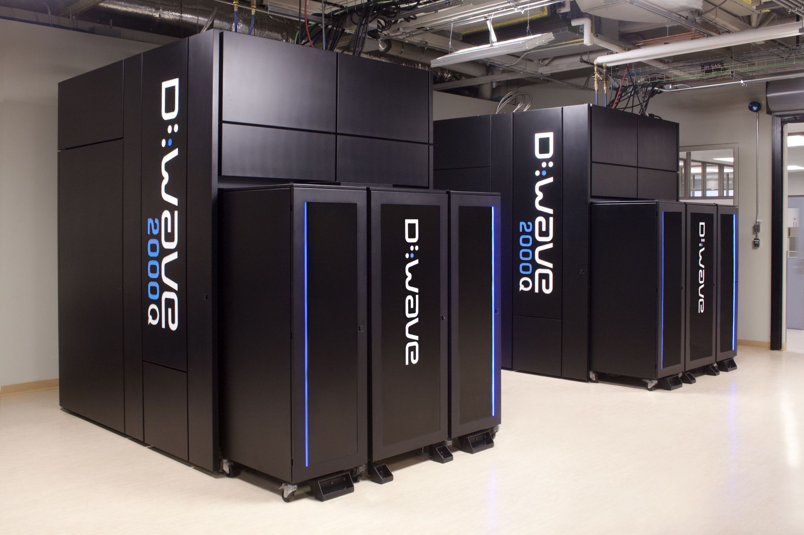

Discover
There are many problems in our world that can’t be addressed by classical computers. This has lead Dwave to create systems that will be able to solve the world most complicated questions.

The D-Wave 2000Q™ Quantum Computer [1]
- The D-Wave 2000Q system has up to 2048 qubits and 5600 couplers. To reach this scale, it uses 128,000 Josephson junctions, which makes the D-Wave 2000Q QPU by far the most complex superconducting integrated circuit ever built.
- The D-Wave 2000Q system operates near absolute zero. This extremely low temperature, along with the shielded environment that isolates the QPU from its surroundings, enables the QPU to behave quantum mechanically. D-Wave systems operate at less than 15 millikelvin, approximately 180 times colder than interstellar space.
- The D-Wave 2000Q system has a footprint of approximately 10’ x 7’ x 10’ (L x W x H). Its physical enclosure houses sophisticated cryogenic refrigeration, shielding, and I/O systems to support a single thumbnail-sized QPU. Most of the physical volume of the system is required to accommodate refrigeration system and to provide easy service access.
Since the begining in 1999, D-wave has always aimed to bring quantum hardware and software to its customers for improved computing power. They believe that the D-Wave systems can bring innovation in:
- Machine learning
- Sampling / Monte Carlo
- Pattern recognition and anomaly detection
- Cyber security
- Image analysis
- Financial analysis
- Software / hardware verification and validation
- Bioinformatics / cancer research
How D-Wave Systems Work [2]
- A lattice of 2000 qubits, is chilled close to absolute zero to harness quantum effects
- A user models a problem into a search for the lowest energy point in the system
- The processor considers all possibilities simultaneously to determine the lowest energy and the values that produce it
- Multiple solutions are returned to the user, scaled to show optimal answers
BIBLIOGRAPHY
[1] The D-Wave 2000Q™
[2] D-Wave